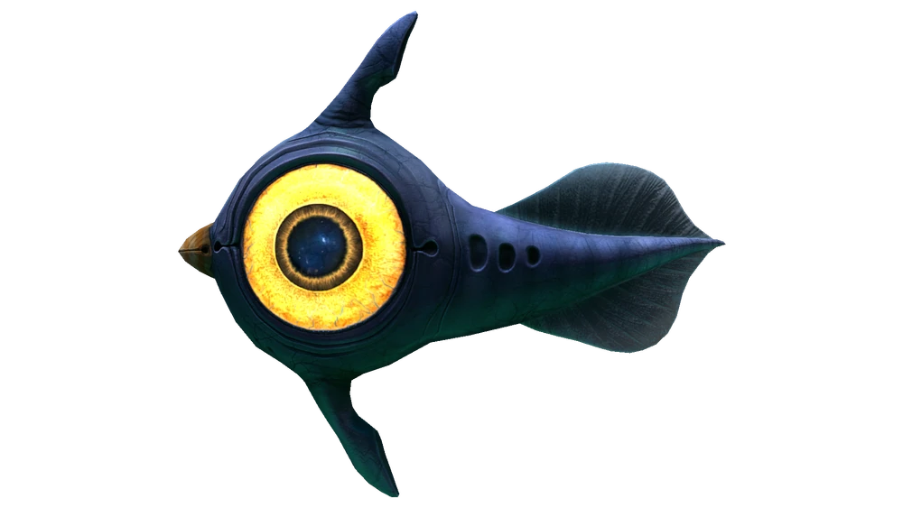
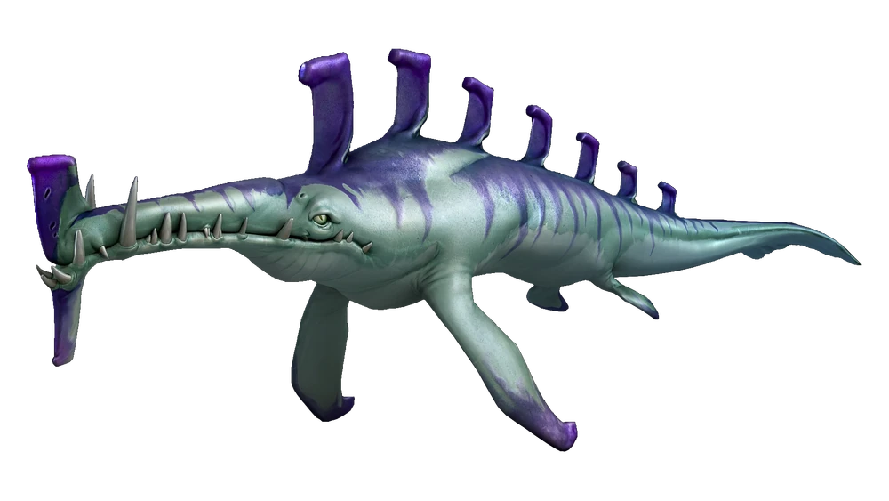
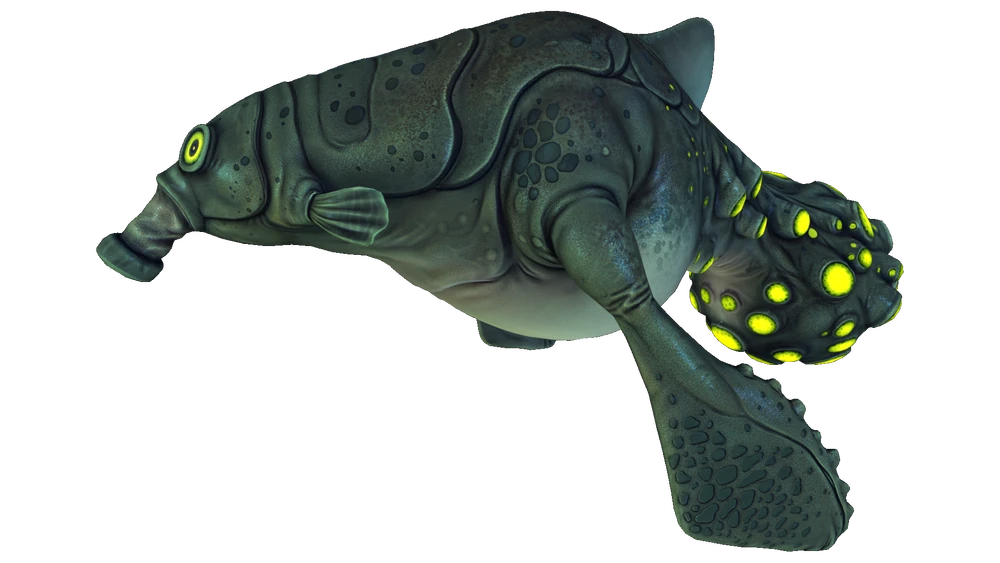
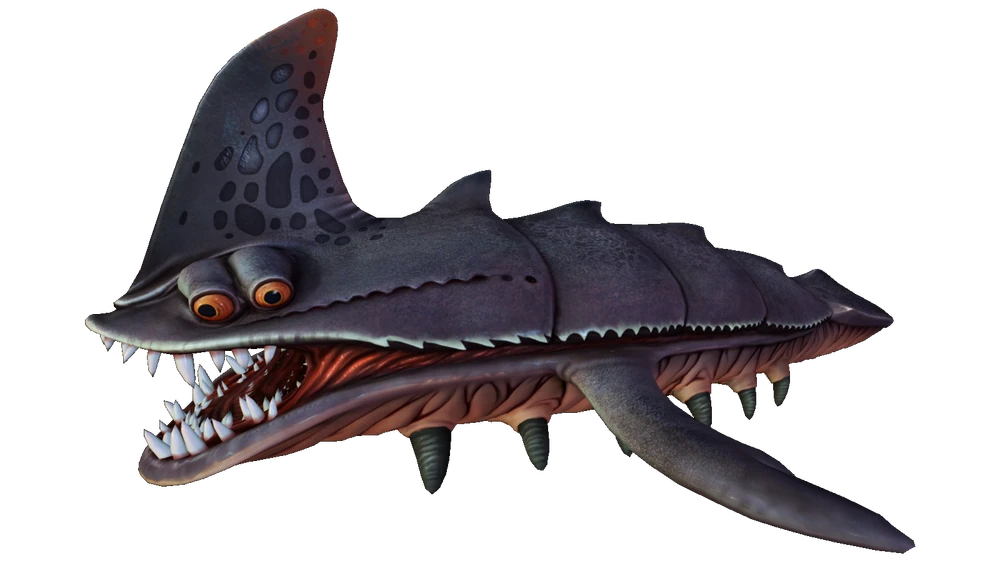
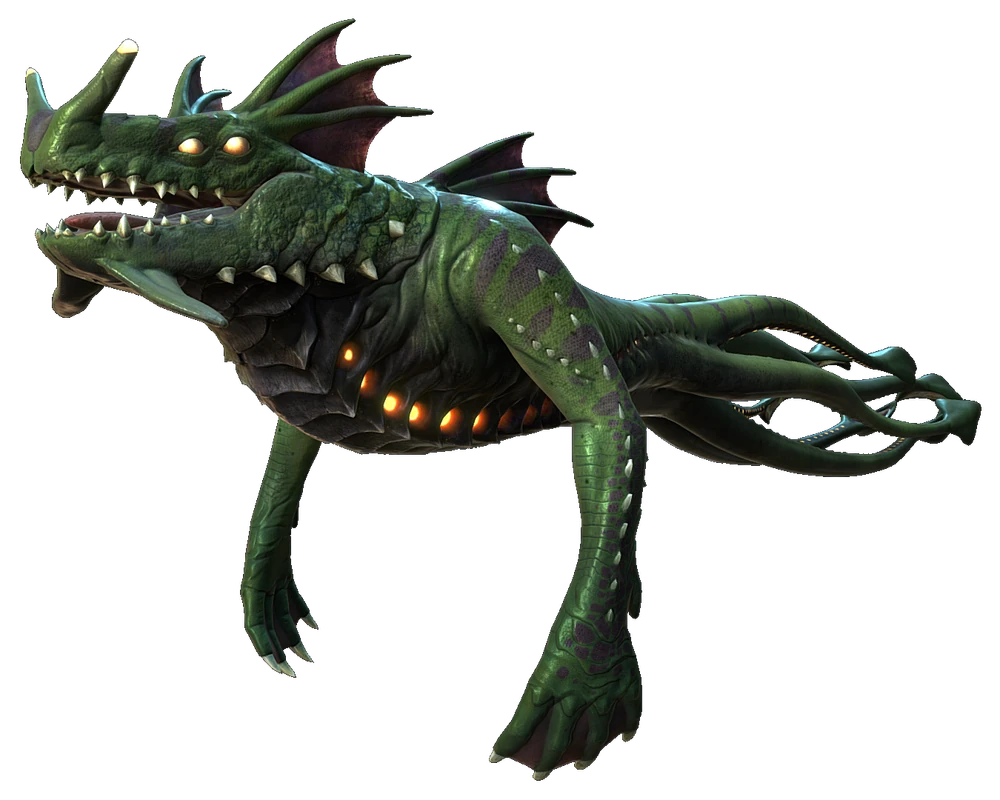

Peeper
Biome
Safe Shallows, Kelp Forest
Behaviour
Passive
Description
One of the most iconic creatures in Subnautica. The Peeper is a small passive fish that poses no threat to the player. It serves as a basic food source early in the game.

Stalker
Biome
Kelp Forest
Behaviour
Aggressive
Description
A medium sized predator known for its curious habit of collecting metal salvage and bringing it back to its territory. While aggressive toward the player, Stalkers can lose their teeth when chewing on metal which makes them a useful source of Stalker Teeth for crafting.

Gasopod
Biome
Safe Shallows, Grassy Plateaus
Behaviour
Passive but Dangerous.
Description
A large bloated creature that drifts slowly through shallow waters. While not actively aggressive the Gasopod releases toxic gas pods when threatened which can quickly drain your health if you get too close. Keep your distance.

Sandshark
Biome
Grassy Plateaus, Sand Zone
Behaviour
Aggressive
Description
A fast and territorial predator that burrows beneath the sand and ambushes unsuspecting players. Its armoured body makes it difficult to avoid and its speed makes escaping tricky without a vehicle.

Reaper Leviathan
Biome
Crash Zone, Dunes, Mountains
Behaviour
Apex Predator
Description
One of the most feared creatures in Subnautica. The Reaper Leviathan is a massive aggressive predator that can grab and crush the player and even their Seamoth vehicle. Its distinctive roar is often the last warning you get before an attack. Avoid at all costs.

Sea Dragon Leviathan
Biome
Inactive Lava Zone, Active Lava Zone
Behaviour
Apex Predator
Description
The largest and most terrifying creature in Subnautica. Found only in the deepest and most dangerous biomes, the Sea Dragon Leviathan can spit fireballs and swallow the player whole. Encountering one is a truly unforgettable experience.